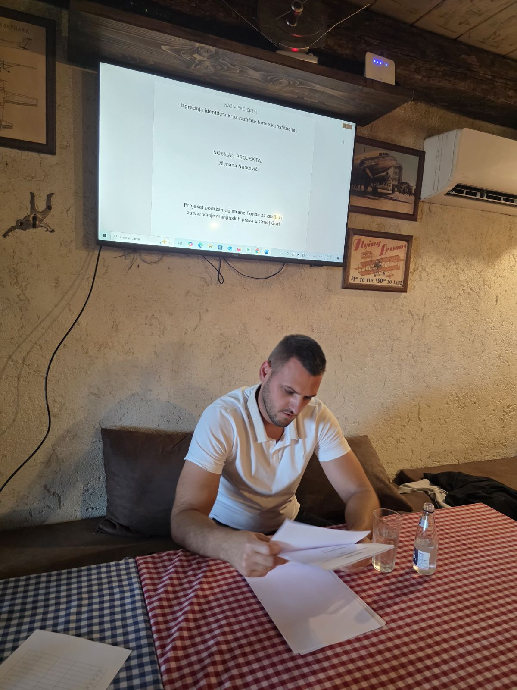
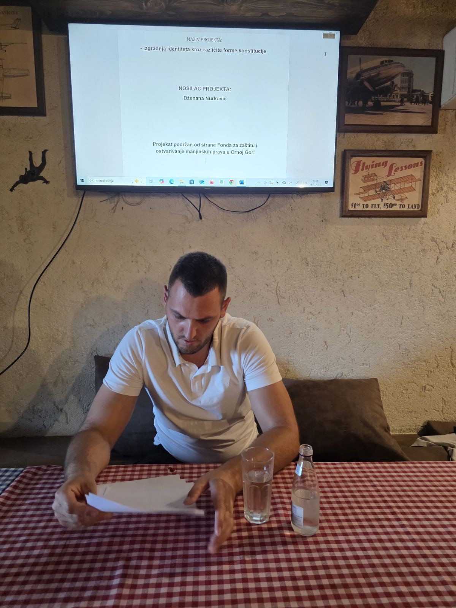
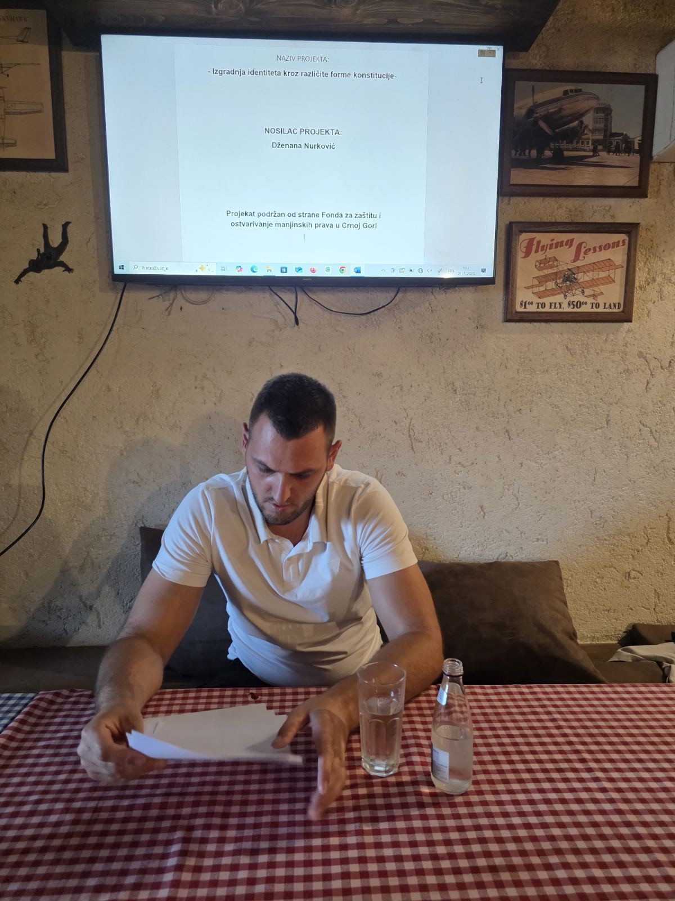
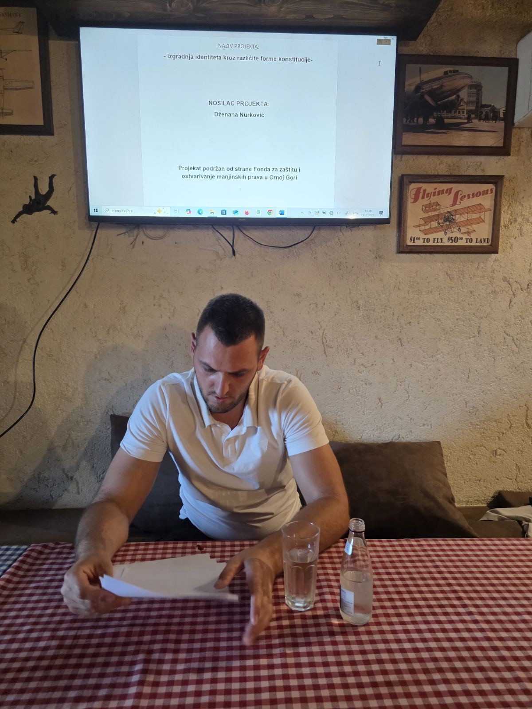

1. Kako biste opisali svoj lični odnos prema albanskom jeziku? Da li ga doživljavate samo kao sredstvo komunikacije ili kao nešto dublje?
Enis Metđonaj:
Albanski jezik za mene nije samo način da se sporazumijevam – on je sastavni dio mog identiteta, osjećaj pripadnosti i temelj mog ličnog i porodičnog nasljeđa. Kroz albanski jezik sam odrastao, učio prve riječi od roditelja, slušao narodne priče, pjesme i savjete koji nose mudrost generacija. Taj jezik je nosilac posebne melodije, emocije i ritma koji se ne može prevesti. Kad govorim albanski, osjećam da govorim "svojim glasom", onim pravim, iskrenim. Jezik nije samo sredstvo – on je naš pogled na svijet, naš mentalitet, naša duša. I što sam stariji, sve više osjećam koliko je važno očuvati ga.
Na koji način albanski jezik odražava Vaš kulturni, porodični i regionalni identitet u okviru crnogorskog društva?
Enis Metđonaj:
Albanski jezik me povezuje sa kulturom moga naroda, ali i sa porodicom i krajem iz kojeg potičem. U mojoj porodici se albanski govorio svakodnevno – kod kuće, na okupljanjima, u pričama koje su prenošene s koljena na koljeno. U albanskom jeziku je sačuvana posebna osjećajnost, izraz poštovanja prema starijima, bogatstvo narodne mudrosti, kao i karakterističan humor. U kontekstu Crne Gore, gdje živimo sa različitim narodima i jezicima, albanski je dio te šire slike i doprinosi raznolikosti. Kroz svoj jezik ja ne gubim vezu sa svojim identitetom, već ga potvrđujem i doprinosim bogatstvu zajedničkog društva.
Kako se, po Vašem mišljenju, mladi Albanci u Crnoj Gori danas odnose prema svom jeziku – da li ga njeguju ili se udaljavaju od njega??
Enis Metđonaj:
To zavisi od sredine, obrazovanja i podrške koju dobijaju. Ima mnogo mladih koji se ponose albanskim jezikom, uče ga, pišu poeziju, njeguju kulturne tradicije kroz jezik. Međutim, primjetno je da u urbanijim sredinama, pod uticajem tehnologije i društvenih mreža, mladi sve više miješaju jezike, koriste strani žargon i polako gube osjećaj za pravilno izražavanje na albanskom. Zbog toga smatram da je odgovornost nas odraslih – roditelja, prosvjetnih radnika, kulturnih radnika – da im budemo primjer i da stvorimo prostor gdje će albanski jezik biti živ, kreativan i moderan. Ne da ga forsiramo, nego da ga učinimo bliskim.
Koliko su kultura, tradicija i jezik uticali na vaše formiranje kao osobe?
Enis Metđonaj:
Ogromno. Kultura me naučila ko sam u širem smislu – kao deo naroda, istorije, vrednosnog sistema. Tradicija mi je dala osećaj pripadnosti – one sitnice koje možda ne primećujemo dok ih ne izgubimo: miris hleba iz detinjstva, način na koji se pozdravljamo, rituali porodičnih okupljanja. Jezik je, pak, temelj mog izražavanja – u jeziku se krije način na koji mislimo, a ne samo kako govorimo. Ponekad, kad čujem stare izreke, osetim više istine nego u stotinama stranica moderne psihologije. Kultura, tradicija i jezik su kao senka – idu sa mnom svuda, čak i kad mislim da sam ih ostavio negde iza.
Da li smatrate da su dvojezičnost i poznavanje više jezika (npr. albanskog i crnogorskog/srpskog) prednost ili izazov za Vaš identitet?
Enis Metđonaj:
Dvojezičnost, po mom mišljenju, nije prepreka već prednost. Govoriti albanski kao maternji je dar, a znati i crnogorski, srpski ili bilo koji drugi jezik je dodatno bogatstvo. To nam daje mogućnost da komuniciramo šire, da se bolje razumijemo i da lakše gradimo mostove među zajednicama. Meni to nije ugrozilo identitet – naprotiv, dalo mi je sigurnost da mogu izražavati ko sam na više jezika, bez gubitka osjećaja pripadnosti. Bitno je samo da maternji jezik ostane čvrst temelj, a svi ostali jezici dodatni alati za bolju komunikaciju i razumijevanje.
. Šta biste poručili mladim ljudima koji možda ne vide važnost očuvanja albanskog jezika? Zašto je, po Vama, važno čuvati i njegovati svoj jezički identitet?
Enis Metđonaj:
Poručio bih im da albanski jezik nije samo "jezik starih" ili nešto što pripada prošlosti – to je most koji nas povezuje sa našim precima, ali i s budućim generacijama. Ako izgubimo svoj jezik, gubimo i dio sebe – svoje priče, pjesme, izraze koje ne možemo prevesti, a koji nose toliko značenja. Jezik je ono što nas razlikuje, ali i ono što nas čini posebnima. Možeš biti moderan, obrazovan, globalno orijentisan – a istovremeno gajiti svoj maternji jezik. Nije sramota govoriti albanski; naprotiv, to je čast. I zato bih mladima rekao: čuvajte svoj jezik, pričajte njime sa ponosom, učite druge da ga razumiju i nikada se nemojte stidjeti odakle dolazite.

 


foto: Dzenana Nurković
← Nazad na početnu stranu